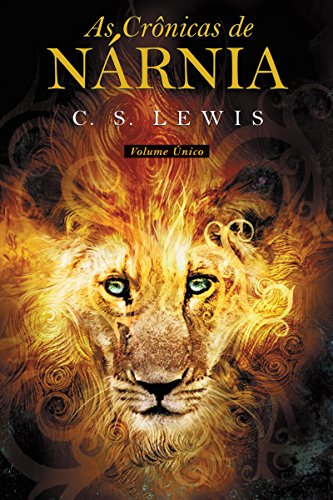
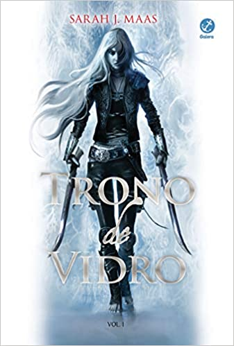
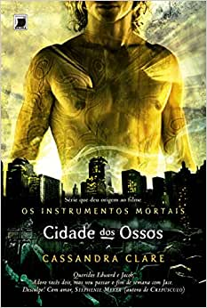

Gênero Fantasia/Sobrenatural
A Fantasia é um dos gêneros de ficção em que, normalmente, são utilizados efeitos sobrenaturais e mágicos como um dos fatores principais da história. A maioria das obras desse gênero contém seres mágicos, mundos inexistentes e várias outras características que ajudam a compor este enredo imaginário.
A grande vantagem da Fantasia é que suas histórias podem acabar se misturando um pouco com o mundo real e isso não separa tanto os leitores da obra. O claro exemplo disso é Harry Potter que, mesmo com todo um universo mágico por trás, ele mostra muito da cidade de Londres e até traz uma personagem humana que é a Hermione.

As crônicas de Narnia
As crônicas de Nárnia (no original The Chronicles of Narnia) é uma obra literária do escritor irlandês C. S. Lewis que conta as aventuras e desventuras de algumas crianças (e de alguns adultos também, porém de maneira secundária) no Universo paralelo de Nárnia, e é dividida em sete livros que foram escritos separadamente.
Esta obra era praticamente desconhecida no Brasil até o lançamento do primeiro filme, o que fez com que o livro fosse um dos mais vendidos no país.
Os sete livros foram ilustrados por Pauline Baynes, que foi apresentada a C. S. Lewis por J. R. R. Tolkien (O Senhor dos Anéis).

Trono de vidro
A magia há muito abandonou Adarlan. Um perverso rei governa de seu trono de vidro, punindo impiedosamente as minorias rebeldes, quando uma assassina chega ao castelo. Depois de cometer um erro e ser capturada, ela se torna prisioneira nas minas de sal de Endovier, onde a tortura prevalece e ninguém sobrevive.
No lugar de resistir à sentença de morte iminente, a assassina de Adarlan aceita uma proposta: representar o príncipe em uma competição com os melhores guerreiros do reino. Mas ela não diz sim para matar, quer sua liberdade de volta. Se derrotar os 23 assassinos, ladrões e soldados, será a campeã do rei e estará livre depois de servi-lo por alguns anos.

Cidade dos Ossos
Clary Fray é uma adolescente comum da cidade de Nova York. Durante uma saída à balada, ela presencia três adolescentes matando um homem, mas seu melhor amigo Simon nem ninguém parece acreditar nela quando tenta denunciar o crime.
No dia seguinte, sua mãe é sequestrada por criaturas estranhas e assustadoras, ligando o evento da noite anterior ao sequestro. Por conta disso, Clary é apresentada aos Caçadores de Sombras (ou nephilims), criaturas metade humano metade anjo, com habilidades sobrenaturais para eliminar criaturas de outras dimensões que ameaçam os seres humanos.
Quais são os subgêneros do terror?
Agora que você já apresentei meus livros de terror preferido, que tal saber um pouco mais sobre os subgêneros dessa categoria?
Alta Fantasia
São histórias que acontecem em mundos imaginários e alternativos.
Baixa Fantasia
São histórias fantásticas, mas que acontecem em um mundo real.
Fantasia Científica
São fantasias que contém alguns elementos deste outro gênero que é a Ficção Científica.
Fantasia Sombria
São histórias que contém elementos de terror e horror.
Fantasia Romântica
É aquela que contém um enredo amoroso entre os personagens.